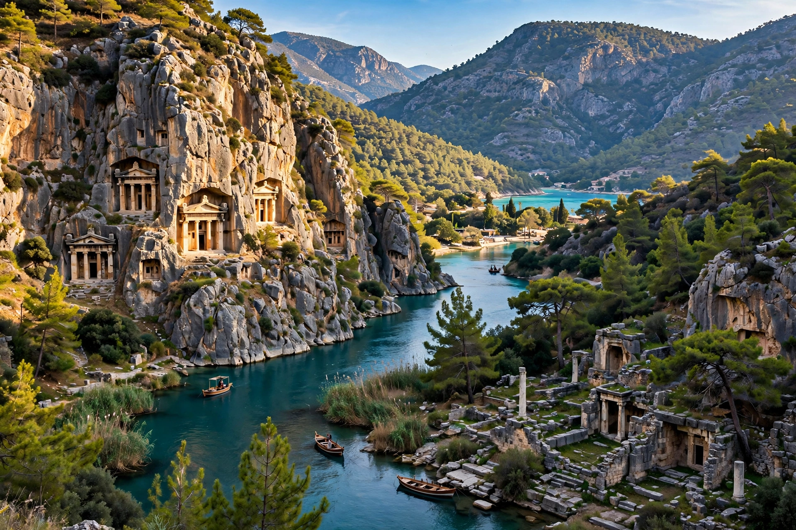

| Location | Southwestern Anatolia, modern Antalya and Muğla provinces, Turkey |
|---|---|
| Capital | Xanthos; Patara (assembly) |
| Languages | Lycian, Greek |
| Era | Bronze Age – Roman |
Lycia (Lycian: 𐊗𐊕𐊐𐊎𐊆𐊖 Trm̃mis; Greek: Λυκία) was a historical region in southwestern Anatolia on the Mediterranean coast of modern Turkey. The Lycians spoke an Indo-European language related to Luwian and are mentioned in Egyptian and Hittite records as the Lukka.
Lycia came under Persian rule in the 6th century BC, was taken by Alexander the Great, and later became a Roman province under Claudius in AD 43. The Lycian League — a federation of 23 cities with proportional representation meeting at Patara — was praised by Montesquieu and influenced the framers of the US Constitution.
Lycia is famed for its rock-cut house tombs, pillar tombs and sarcophagi, at sites such as Xanthos (a UNESCO World Heritage Site), Letoon, Pinara, Tlos, Myra and Patara. St Nicholas was bishop of Myra in the 4th century AD. The Lycian Way long-distance trail follows the coast today.